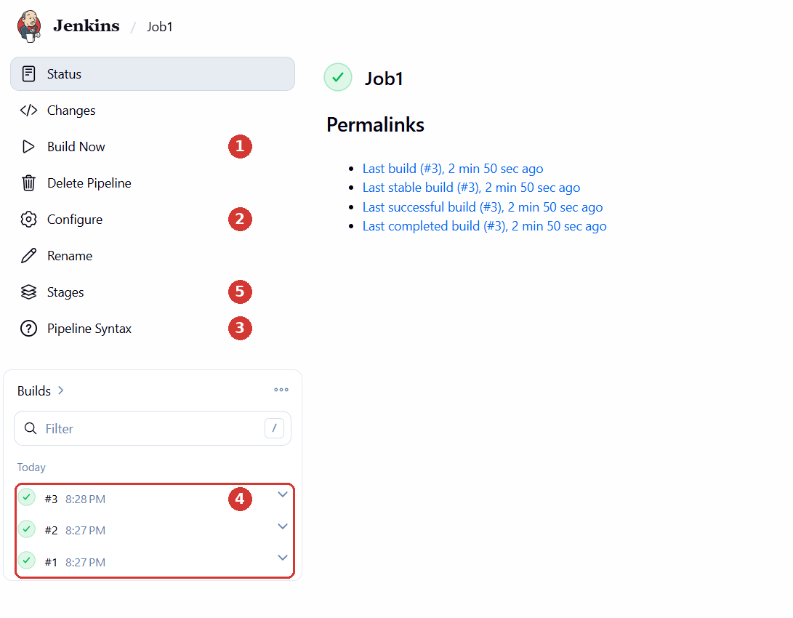
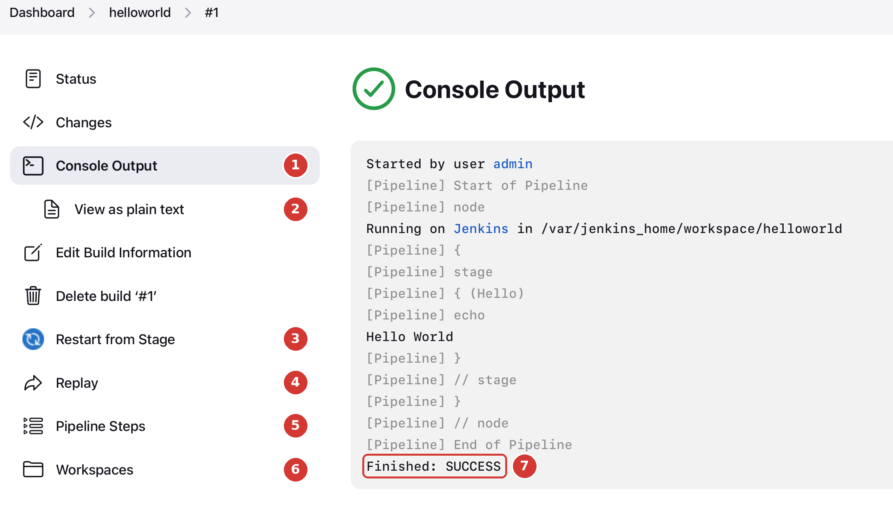

Lab 2 · Your First Pipeline
4. Explore the Jenkins Buttons
Open your hello-world job and try each button below. Each one takes about a minute.
On the job page

- Build Now: runs the pipeline again. Try it: click it twice. Builds #2 and #3 appear in the Builds list.
- Configure: opens the job settings and the script. Try it: replace
Hello Worldwith your first name, click Save, then Build Now. Check the new message in the Console Output. - Pipeline Syntax: the Snippet Generator writes pipeline code for you. Try it: in Sample Step, choose sh: Shell Script, type
date, and click Generate Pipeline Script. Copy the line it gives you (sh 'date'), add it underechoin your script (Configure), save and build. Jenkins installed on Windows: choose bat: Windows Batch Script and typedate /t(without/t, Windows waits for a new date and the build never ends). - Builds: every build is kept, with its number, time and result. Click a build number (for example #3) to open it.
- Stages: the stages drawn as a graph. Click a stage to see its steps and logs. The Stage View table on the job page (page 0 plugin) shows the same results for all builds at once: green means success, red means failure.
On a build page
Click the last build in the Builds list:

- Console Output: the full log of the build. It is the first place to look when something fails.
- View as plain text: the same log without formatting, easy to copy into a report or a message to your teacher.
- Restart from Stage: runs the pipeline again starting from a chosen stage. Useful when only the last stage failed, so you do not repeat everything.
- Replay: edits the script for one run only, without changing the job. Try it: click Replay, add the line
echo 'Replay test', click Run. Then open Configure: the saved script has not changed. - Pipeline Steps: the list of every step that ran, with its status and duration.
- Workspaces: the files in the working folder of the build. Empty for now; later, it will contain the code Jenkins downloads from Git.
- Finished: SUCCESS: the result of the build. It can also be
FAILURE,UNSTABLEorABORTED.